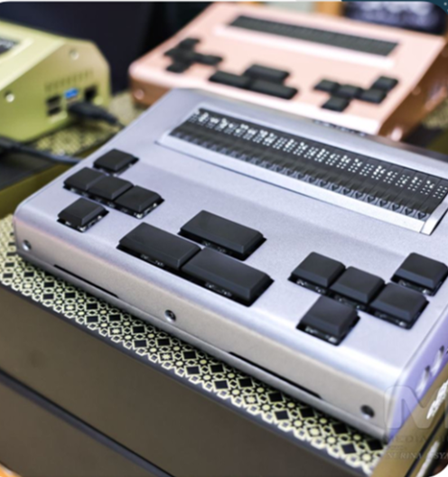
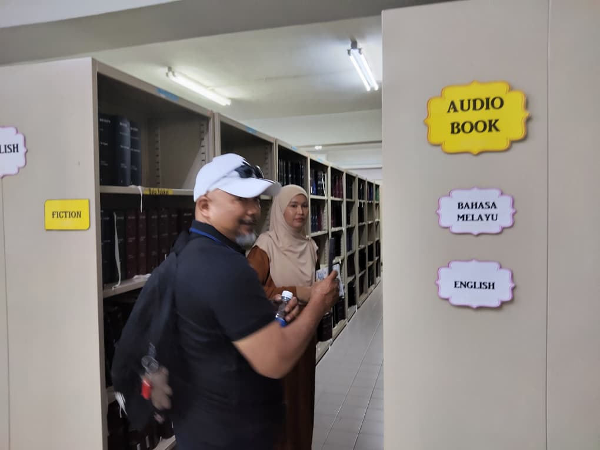
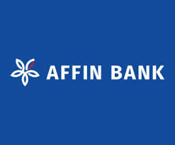

Kasih yang dikongsi.
Harapan yang dibina.
Kami percaya setiap insan berhak mendapat peluang untuk membina kehidupan yang lebih baik. Yayasan Cinta Kasih memperkasa masyarakat melalui pendidikan, kebajikan dan pembangunan komuniti tanpa mengira bangsa atau agama.
Kenali kami dengan lebih dekat ↗Enam teras.
Satu hasrat bersama.
Usaha yang merangkumi keperluan insan, kesejahteraan komuniti dan kelestarian kehidupan.

eBrelle · Laptop for the BlindMembuka dunia
melalui Braille.
Melalui kerjasama dengan EDOTE Sdn Bhd, YCK mengusahakan penajaan dan pembekalan peranti eBrelle untuk memperluas akses pembelajaran bagi komuniti OKU penglihatan.
- Membaca, menulis dan mencatat nota dalam Braille digital.
- Program pembacaan Al-Quran melalui eBrelle.
- Usaha kolaborasi dan latihan bersama komuniti OKU penglihatan.
Kerjasama penajaan dan pembekalan bersama EDOTE Sdn Bhd.
Setiap usaha,
membawa makna.
Terokai program sedia ada dan perancangan YCK untuk masyarakat. Projek dalam perancangan ditandakan dengan jelas.
“Peneraju Pemerkasaan
Modal Insan dan
Masyarakat Mandiri.”
Transformasi insan ke arah kemajuan dan jati diri.
Integrasi nasional, budaya dan kepelbagaian etnik.
Kelestarian alam, keseimbangan ekosistem dan kemanusiaan.
Hadir bersama.
Menyantuni masyarakat.

Jalinan komuniti bersama MAB
Lawatan wakil YCK ke Malaysia Association for the Blind membuka ruang perbincangan kolaborasi penajaan eBrelle dan cadangan pusat latihan.
Ilmu untuk
masyarakat.
Perubahan bermula
dengan kita.
Individu, sukarelawan, NGO dan organisasi korporat dialu-alukan untuk bersama dalam program YCK. Mari bincangkan cara anda boleh menyumbang kepakaran dan membina peluang untuk masyarakat.
Bincang Kerjasama ↗Salurkan kasih.
Bina harapan.
Sumbangan kepada Yayasan Cinta Kasih boleh disalurkan melalui akaun Affin Bank berikut.

YAYASAN CINTA KASIH1051 9000 9489Affin Bank Berhad
Cawangan Setapak